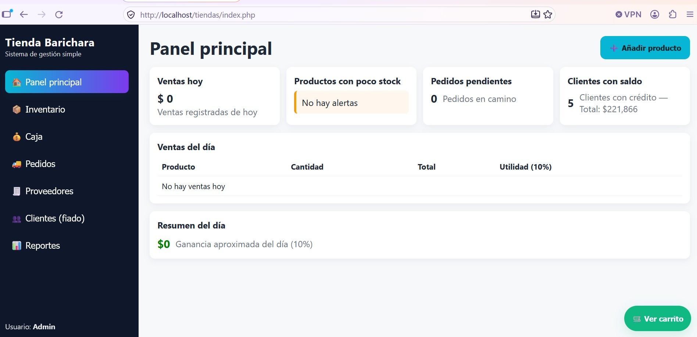
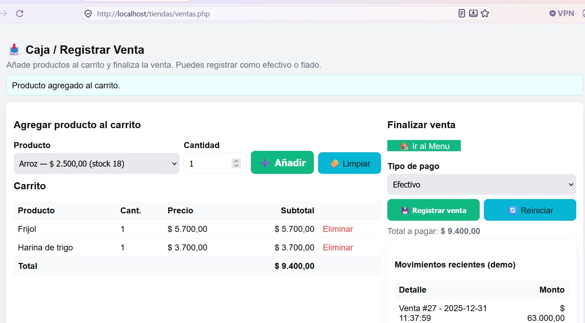
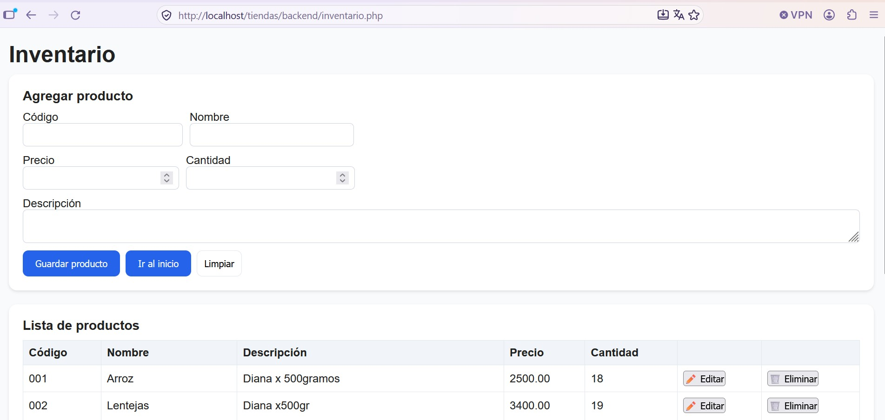

Tienda Barichara
Sistema de gestión de ventas e inventario



Sistema web para optimizar las ventas, el inventario y la administración interna de un negocio. Está compuesto por módulos integrados (menú principal, caja registradora e inventario) que mantienen la información ordenada y consistente.